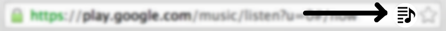

Autoplaylists for Google Music™
This Chrome extension adds customizable rule-based autoplaylists to Google Music. They work just like iTunes "smart playlists".

This extension is not supported nor endorsed by Google.
Installation
An unlisted beta can be installed from the Chrome Web Store:
- join the autoplaylists mailing list
- install the autoplaylists extension.
Mailing list members are "trusted testers" of the extension; you'll need to be a member for the second link to work.
Usage
- open a tab to https://play.google.com/music/listen.
- click the extension's "page action": the tiny icon in the far right of the url bar.
- your autoplaylists will be updated automatically in real time. See the FAQ for more details.
This is what the page action looks like:

Support
Visit the wiki for support and more details on how the extension works.
Contributing
Visit the GitHub project page to see the code.
Google Music is a trademark of Google Inc. Use of this trademark is subject to Google Permissions.